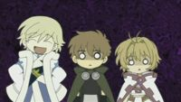
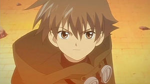
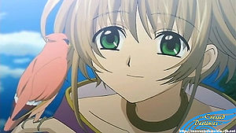
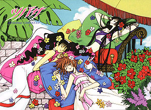
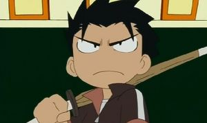

Tsubasa Reservoir Chronicle
 De: La Frikipedia, la enciclopedia extremadamente seria.
De: La Frikipedia, la enciclopedia extremadamente seria.
| De la serie anime para todos:
|
| Tsubasa Reservoir Chronicle
|
| 
|
| Los personajes al ver este artículo
|
|
| Género:
|
Yaoi, super tragedia griega
|
| Episodios:
|
52 (232.5 en el manga)
|
| Autor del manga:
|
CLAMP
|
| Publicación:
|
2003
|
| Publicado en:
|
Alguna revista porno japonesa
|
| Director del anime:
|
Mokana Modoki
|
| Transmitido en:
|
Fansubs
|
| Ovas:
|
5
|
| Películas:
|
1 mierda
|
| Notas
|
No confies en tu novio, podría ser un clon del verdadero que es un come-ojos
|
«Me caía mejor Mokona cuando no hablaba»
~ Yo y muchos más otakus diciendo la verdad
«¡¡¡LIBERATE!!!»
~ Sakura equivocandose de serie
«¡Esta serie es una mierda!»
~ Kerberos celoso por sólo salir en 1 episodio de esta serie
«Me gusta mucho Kuropi»
~ Fai hablando con Kurogane mientras le chupa la polla sangre
«Syaoran, yo soy tu Padre!!!»
~ Syaoran anunciandole a Syaoran de dónde proviene su existencia cíclica
Tsubasa Reservoir Chronicle no es más que uno de los intentos de la malvada organización CLAMP para conquistar el mundo por medio de esta historia llena de relaciones extrañas entre personajes de diferentes series ser todo a los de la serie de Sakura Card Captor. Relata las aventuras de Shaoran que con su amada Sakura, el hermano de Roronoa Zoro Kurogane y el bisexual Fai buscan las plumas de Sakura.
Historia
 ¿Que chingados me ves güey?  No te dejes engañar por su linda carita, se va a follar al pajarito
En un país musulmán reinaba el rey Clown hasta que se murió (realmente no murió, solo se fue de parranda con tesorito a Sakura le salen unas alas las cuales se despluman haciendo que esta pierda sus recuerdos. En ese momento llegan los dela PGR unos seres extraños dispuestos a violar llevarse a Sakura por lo que ella y Shaoran son enviados por el gay Yukito con la piruja bruja de las dimensiones para que esta les ayude.
En otra dimensión se encuentran un rarito llamado Fai y la copia de su madre Chii practicando su muy querido nado sincronizado mientras este le dice que tiene ganas de suicidarse por ya no querer verle la jeta a su rey pero para que no lo confundan con un emo Decide solo irse de ahí y se va directo con la bruja de las dimensiones.
En otro lado en el antiguo Japón se encuentra Kurogane peleando contra Naruto, Kenshin Himura, y los gatos samurai hasta que mata a todo el mundo, le dieron ganas de cogerse a la princesa Tomoyo la jefa del lugar por lo que esta lo manda a chingar su madre mandándolo a otra dimensión mientras se le pasa lo jarioso.
En fin que todos llega con Yuuko la bruja (parecen que todos se pusieron de acuerdo) Shaoran le pide a Yuuko que lo ayude para que Sakura despierte y deje de babear encima suyo, Fai le dice que no tiene ganas de regresar a su mundo y si lo regresa se pondra muy triste bu bu (mendigo gay) y Kurogane le dice que si no lo regresa le partirá su chingada madre (el fue el más sincero) Yuuko les dice que los ayudara si follan con ella les de lo más preciado que tienen. En el caso de Shaoran serán los recuerdos de Sakura de el(parece que no existIa el dinero en aquella época ,no), Fai entrega su muy preciado tatuaje de Metallica con la cara de Barney el dinosaurio de fondo, y Kurogane la espada de su papi. Yuuko les entrega a Mokona Blanca para que este los pierda los guíe por el camino. De ahí en adelante pasan un montón de mamadas hasta que se entera que el Shaoran que los ha acompañado todo este tiempo es un desgraciado clon del verdadero que anda en busca de ojos ajenos para tragar y bla bla bla
Personajes
 Practicamente es lo único que hace Sakura en toda la puta serie
 Kurogane, el tipo malo, cuando fué maestro de primaria del gobierno

Hola, soy Sai y me enamoré de Fai y Kurogane - Shaoran (o "Syaoran"): Es el mismo wey que en Card Captor con la diferencia de que aquí es heterosexual (no como en la otra que era bisexual). Quiere encontrar las plumas de Sakura para ponerse a folla ya que después de eso ella lo olvidara para siempre. Su pokemon es un perro de fuego que salió en las guerreras mágicas. En las batallas parece pelear pero solo se la pasa aventando patadas a lo loco con un hitmonlee borracho.
- Sakura: Es la misma que Card captor con dos pequeñas diferencias: esta más desarrolladita (lastima que siga siendo igual de plana) y es una completa inútil (en toda la puta serie no ayuda en nada en las peleas se hace la desmayada hasta que todo pasa). Perdió sus plumas y con ellas su memoria le tiene ganas a Shaoran aunque ni se acuerde de el (eso es ser bien zorra). A partir de la segunda temporada aprende a decir otra cosa que no sea "Shaoran Li!"
- Fai D. Flourite (o Fye): El típico Sai gay con cara de pendejo sonriente. Era el novio del rey de su país hasta que rompieron por lo que temiendo que se vengara se despidió de su pseudo-madre Chii, la convirtió en una cosa para tapar piscinas, y huyo de ese mundo con el rabo entre las patas. Tampoco ayuda en la mayoría de las peleas, solo se queda sonriendo como wey. Su pokemon es un pajarote gigante. Y para terminar de arruinarles la historia, se convierte en un vampiro, y tiene un gemelo hecho una porquería llamado Yuui.
- Kurogane: Es el hermano menor de Roronoa Zoro aunque en ninguna de las dos series lo mencionan. Un samurái que llego formar parte de los maestros espada de la aldea de la niebla. Un día tenía ganas de violar a su patrona Tomoyo por lo que lo manda otra dimensión por lo que ahora tiene que viajar por todos lados con la otra bola de weyes. Es el único que realmente pelea en toda la serie te agarra a combos con su espada, luego convoca a su pokemon el cual es un dragón azul y te agarra a chingadazos con la espada de Zero, de Code Geass. De nuevo, tendrán la historia arruinada: se vuelve fan de Edwardo Elrico de Fullmetal Alchemist, y se corta un brazo para ponerse un automail.
- Mokona Modoki (blanco): Pokemon blanco de sexo dudoso, en las guerreras mágicas no hablaba y mejor se hubiera quedado callado porque nadie lo soporta. Yuuko se los entrega para que les sirva de localizador. Tiene un hermano que es negro pero Yuuko se lo quedo para tener diversion haciendo botellón con cantidades industriales de sake.
- Fei Wang Reed: Es el malo malote de la serie, uno de los tantos hijos regados del mago Clow, es un chino involucrado en los negocios de Zhen Li Ye Gon quiere obtener las plumas de Sakura porque con ellas tendrá el poder de liberar de la cárcel a su amigo Zhen Li y de paso conquistar el mundo.
- El clon de Syaoran, revivido previamente por Yuuko, es a la vez el padre de Syaoran...y la clon de Sakura es su madre
- Pinche Clow tiene un chingo de hijos regados por todo el mundo Sakura, Touya, Shaoran, Fei Wang etc ya nada más falta que digan que Naruto es su hijo.
- Eso si Touya y Yukito sigue siendo un par de locas.
- Nadie es quien aparenta ser, todos tienen nombres falsos, o son clones, o copias, o no existen en realidad, o no deberian existir, todos son hijos de todos (hasta de ellos mismos), no hay dimensiones ni leyes físicas, etc. Así que ni se te ocurra leer el manga si no quieres que se te salgan los sesos por una oreja de tanto pensar. * frase escrita por KaZe YaShA y robada por NarutoHyuuga90 parA hacer sus críticas mega-originales en YuTiub*
- Hay en realidad como 354124532846324 Syaoran´s en esta y otros animes.
- Todos aparentan una edad mayor, cuando solo tienen alrededor de 15 años.
EL PAPA DE SYAORAN ES EL MISMO!!!!! WTF!! su CLON practicamente el es el papa de el mismo osea de donde viene osea de quien es el clon!!! CLAMP fumado...y SU mama es el Clon de Sakura osea que su mama es el amor de su vida practicamnete con quien debe quedar pero a la vez es su madre!! eso es algo raro bastante raro.....Y todo por la morvosidad parentesca de la BRUJA YUKO!!
¿Sabias que...
- Que Fai, Kurogane y Fei son los unicos que no han salido en otra serie?
- Que Mokona es un digivice?
- Que Roronoa Zoro saldra en la cuarta temporada y peleara contra su hermano?
- Que este anime no tiene violencia ni ecchi y por lo tanto es aburrida?
- Que el anime y el manga son dos historias casi completamente diferentes?
- Que el manga tiene violencia, sangre, desmembramientos y demás y que por eso es mejor que el anime?
- Que el anime tiene hartos a sus fans por ser tan confusa y tener demasiados lazos familiares dimensionales?
- Que Clow tiene muchos "desendientes"? osea era muy productivo
- Y que no dejo de verla?
- Y que el final hizo que casi la mitad de fans se suicidara (superado unicamente por el final de Code Geass?
- Sakura y Syaoran por fin se declaran y Fye los interrumpe?
- Y culpa a Kurogane?
Ver también
Enlaces externos
Autor(es):
- Fordus
- Frikiman
- Naruto hyuga
- KaZe YaShA
- Dark temptation
- Catacras
- SakuraMiya
- Mel-o
- DarthSanti
- Goofy.
Frikipedia 2005-2016, Licencia
GFDL 1.2 - Extraído por FrikiLeaks